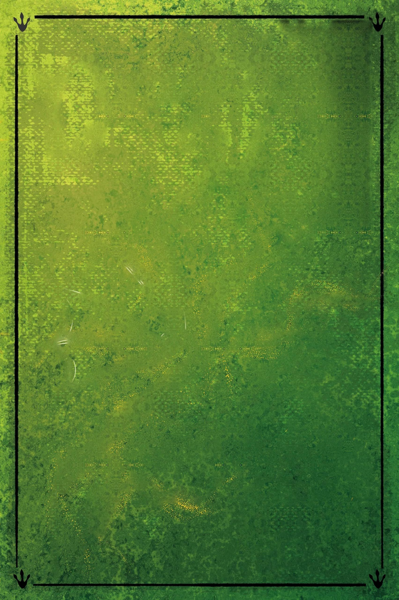
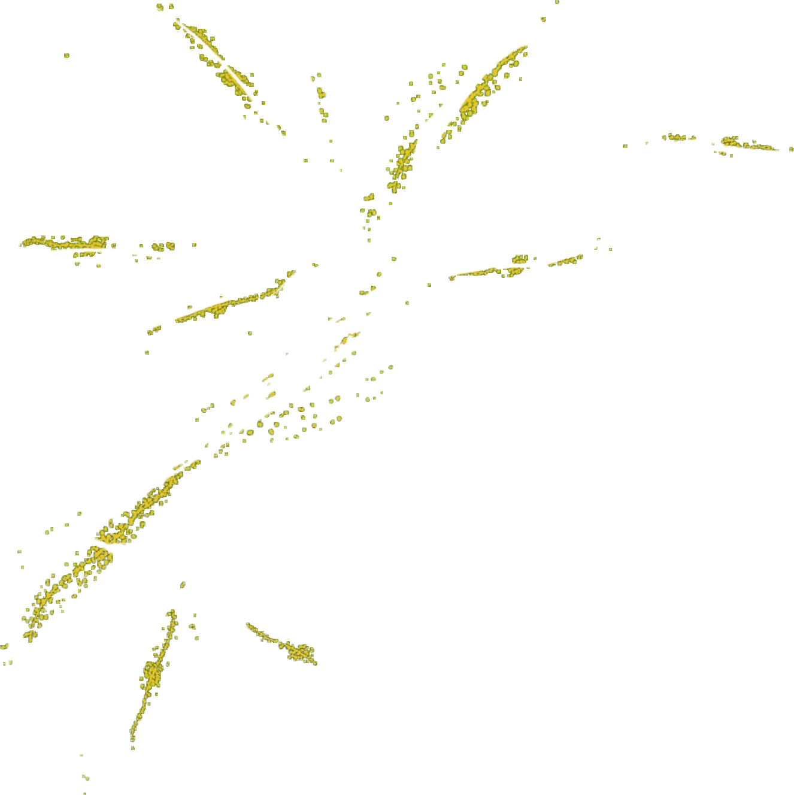
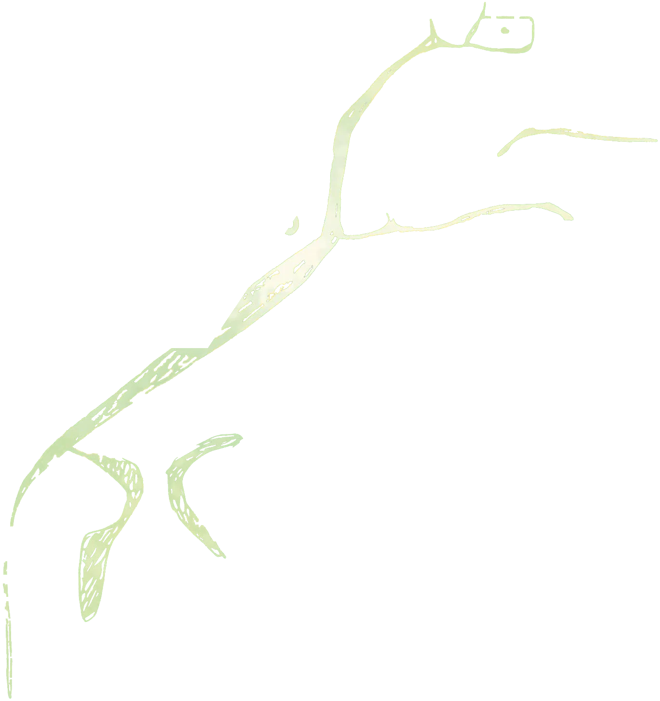
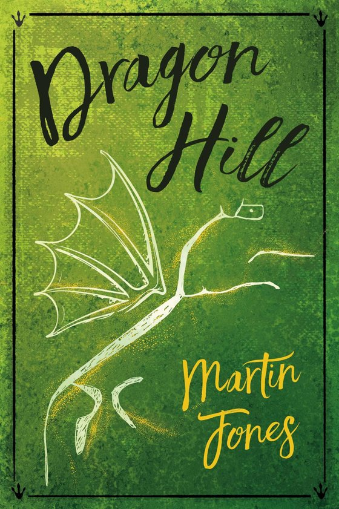
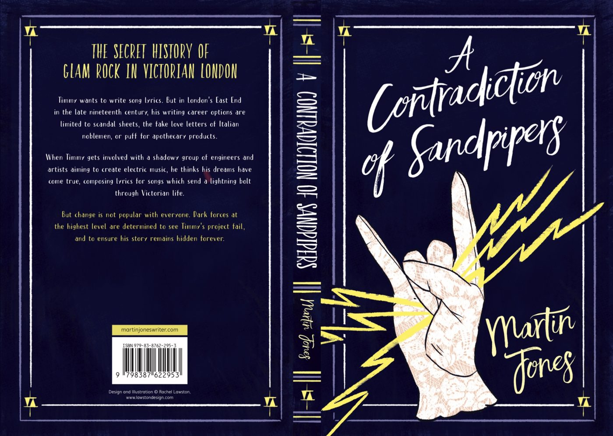
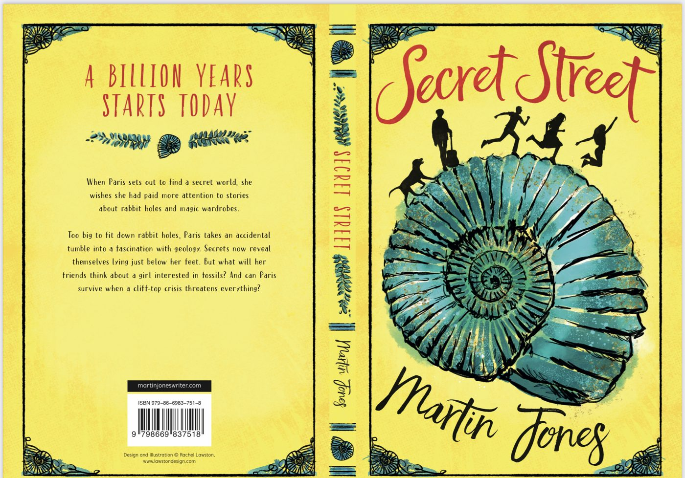

From the blog, 23 October 2026
The Hopkins Manuscript by R.C. Sherriff
A 1939 dystopian science fiction novel, the Moon on a collision course with Earth, and what an old story can still say once its science has gone out of date.
Read the post



Tolkien’s son suggested that a real hill in Oxfordshire inspired Weathertop. Dragon Hill.
George Trellis is at Dragon Hill when he realises that something is wrong.
A modern mythic journey, starting and ending at Dragon Hill.
Buy Dragon Hill

George Trellis, a young researcher and part-time teacher of fantasy literature, is at Dragon Hill when he realises that something is wrong. Scientists at the university, where he bumbles along in the English department, have developed a substance they call DRAGON, designed to counter the forces of breakdown and decay.
There are, however, unintended consequences. DRAGON interprets any variety in its vicinity as something bad and broken. An exhausted science professor gives DRAGON to George in a sealed container disguised as a pen, and tells him to keep it moving.
Buy on AmazonGlam rock in Victorian London, a rowing prince bound for Mars, and a girl who finds a secret world under her feet.

The secret history of glam rock in Victorian London
An attempt to capture the feeling of coming home after a mundane day of putting yet another brick in the wall, and then listening to the sort of music which makes you feel like you could jump right over the wall.
More on the bookSurely being King of one planet should be enough?
A King of Earth wants his grandson and heir to extend the monarchy to Mars. Could there be a place in the Oxford Blue Boat for a future prince who is quite possibly the worst rower at Oxford University?
More on the book
For children: a billion years starts today
What happens if you’re too big for rabbit holes, or you own a faulty wardrobe which is solid at the back? Paris Winsian is one of these people and she is determined to do something about it.
Secret Street on AmazonUntil the world catches up with the idea that I’m a writer, I work in a pharmacy.
Martin writes humorous speculative fiction, children’s fiction and short stories.
From the blog, 23 October 2026
A 1939 dystopian science fiction novel, the Moon on a collision course with Earth, and what an old story can still say once its science has gone out of date.
Read the postOxford Indie Book Fair
Sunday 22 November 2026, 11am to 4.30pm, Oxford Examination Schools, High Street. Free to visit.
Dragon Hill itself is in Oxfordshire too, below the White Horse at Uffington, where the story starts and ends.